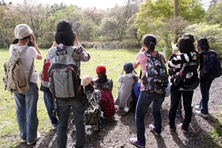

ここ数年さまざまな場所で劇指導の講師を務めました。はじめて演劇部の顧問になった教師にとって、１番の悩みはどのように日々の練習を行ったらよいかわからないというものです。そこでなにかの参考となるように、私が久喜中学校・太東中学校で行ってきた(現在行っている)練習方法を紹介することにしました。(「劇づくり〜台詞練習〜」は学校・学年・学級劇の練習にも役に立つはずです。またこれらは中学生が自分たち自身で練習を進められる取り組みでもあります。)
今回紹介する練習内容と練習方法は、ジャパンライム株式会社からリリースされたDVD 「感情に台詞を乗せる!即興を活かした演劇指導術」をベースにして作成しました。
私たちは演劇部という名前をゲキ部と変えて活動しています。取り組んでいるのは演劇だけではなく、パフォーミングアーツ(舞台芸術)です。演劇の発表も行いますが、それと同じくらいウェイトを置いているのがショウゲキという活動です。小学生や地域のお年寄りのための発表、オレンジコンサートという人権集会でパフォーミングアートを組み込んだ１５分〜２０分程度の発表を行っています。ショウゲキは４つの意味を持っています。その４つの意味とは、①小劇(４分程度の短いゲキ)、②笑劇(コントが入って笑いがある劇)、③Show劇(歌、ダンス、パントマイムなどのパフォーミングアーツが含まれる劇)、④衝撃(衝撃がある劇)です。
短い練習時間で様々なことをに取り組むため、多くの学校が行っている発声練習はほとんど行っていません。
※基本的に１週間の練習は４日です。朝練習は行いません。土・日・祝日の練習は行いません。発表前を除き、長期休暇中の練習は行いません。ただし大会前３週間前からは土・日・祝日の練習を行います。
練習メニューが多いことを大切にしています。そして、ある程度の高いハードルがあることを大切にしています。メニューが多く、ある程度の高いハードルがあることで毎日の練習がマンネリに陥ることなく進められるからです。また、練習が時間つぶしではなく、その練習が劇の上演においてどのように役立つか明確であることも大切です。そうあることによって、日々の練習に目標を持って取り組めるからです。
練習にかける時間よりもその質を大切にしています。なかなか時間が過ぎていかない部活ではなく、「えっ、もう終わり！」と感じられる部活を１年を通して行いたいものです。
毎日毎日、なにかの収穫があることが大切だと思っています。参加すると何かを得られる、そしてなんか得した気分になる部活が理想です。
目次
1.縄跳び
2.ダンス (ジャズダンス、ヒップホップ、クラシックバレエ)
3.合唱
4.殺陣
5.器械運動
6.劇づくり〜台詞練習〜
１ 即興を利用しての劇づくり
「即興」を利用した練習方法・全体の流れ
課題１ 使用するテキスト「ときめきよろめきフォトグラフ」
課題２ 使用するテキスト「ときめきよろめきフォトグラフ」
課題３ 使用するテキスト「ふるさと」
２ 感情に台詞を乗せる
課題１「怒り」に台詞を乗せる 使用するテキスト「春一番」
課題２「喜び」に台詞を乗せる 使用するテキスト「とも」
課題３「涙① 悲しい涙」 使用するテキスト「降るような星空」
課題４「涙② うれし涙」 使用するテキスト「春一番」
３ 応用練習
課題１ 「わくわくを演じる」使用するテキスト「夏休み」
課題２ 「長いシーンをつくってみる」使用するテキスト「夏休み」
課題３ 「いじめを行っている側を演じてみる」使用するテキスト「ふるさと」
課題４ 「複雑な心の動きを描く」使用するテキスト「ときめきよろめきフォトグラフ」
課題５ 「複雑な心の動きを描く」使用するテキスト「春一番」
課題６ 「笑いに挑戦する」使用するテキスト「七つ森」
課題７ 「笑いに挑戦する・男子部員のために」使用するテキスト「アトム」
課題８ 「小学生の女の子を演じる・葛藤を演じる」使用するテキスト「アトム」
7.部活動紹介・新入生勧誘のための劇づくり
台本１ 使用するテキスト「恐怖のバレンタイン」
台本２ 使用するテキスト「怪談の多い料理店」
8.発声練習
発声練習１ 長発声 発声練習２ 短発声
発声練習３「あいうえお」 発声練習４「あかさたな」
発声練習５「あえいうえおあお」 発声練習６「五十音(あめんぼ) 北原白秋」
9.自然観察
1・縄跳び
発表に向けての練習が始まるとなかなか時間が取れませんが、時間に余裕があるときは、ほぼ毎日縄跳びを行います。
ダンスを踊る体力作りとともに、リズム観を養う練習にもなります。縄跳びを行うときは数を数えながら跳ぶので、発声練習の代わりになります。跳んでいる人を応援することで、入部当時は小さい声しか出せなかった生徒も、自然と声が大きくなっていきます。この発声練習は、ただ声を大きく出すことを目的にした発声練習ではありません。感情表現の伴った発声練習です。
前跳び３００回
２つの班に分けて交代で普通跳びで３００回連続して跳びます。
まずは部長の「よーい、始め」という声を合図に最初のグループが普通跳びを始めます。
もう一方のグループは立っています。
実際に飛ぶグループが「１〜10」までを数えます。
続いて飛んでいないグループが「11〜20」を数えます。
続いて跳んでいるグループが「21〜30」を数えます。
このように10ずつ交代で数えていきます。
数えながらずっと跳び続けると疲れて跳び続けることが困難です、交代で数えることで少し息が整えられます。
また「じゅういち・じゅうに」と数えるのはこれまをた苦しいので
「１・２・３・４・５・６・７・８・９・２０」と切りのいい最後だけ正確に十の位も入れて言い、あとは一の位だけで数えていきます。
連続で３００回続けて跳べたら終了です。途中で引っかかってしまった場合は、引っかかった回数×２０回を終了後プラスして跳びます。
前半のグループが終了したら後半のグループと交代して同じことを繰り替えします。
二重跳び
前半のグループがまず同時に跳び始めます。
引っかかった人から座っていきます。
全員が引っかかったところで、後半のグループと交代します。
後半の全員が引っかかったところで自由にチャレンジする時間になります。
それぞれが自分の最高更新を目指して跳びます。
それぞれ何回かの挑戦をしたところで終了し、記録をとります。
毎日の記録をとることが大切です。
それぞれの最高は何回なのかを記録しておくことが大切です。自分の最高を更新することが毎日の目標となるため、とりあえずやっているだけといった練習にはなりません。
この練習には顧問の自分も参加します。５9歳の今でも100回以上跳ぶことができます。この練習を始めた２０代前半は５０回を跳ぶのがやっとでしたが、３０年後にそれ以上跳べるのは省エネをする跳び方をマスターしたからです。
最高が出たときには、本人が「最高でました○○回です」と報告し、みんなが「おめでとう」と拍手をします。
この練習は発声練習を兼ねています。
発声練習はどうしても機械的な練習になってしまう嫌いがありますが、縄跳びをしている間のかけ声は心のこもった発声練習、感情の詰まった発声練習となります。
最後に今日の全員の最高記録を部長が部活ノートに記録します。最高の更新があった場合は「今日は○○さんが○○回で最高を出しました」と報告し、まわりは再び拍手をします。
継続は力なり。今まで３年間一緒に部活を行った生徒のほとんどが連続で１００回以上跳べるようになります。運動神経がよくないから無理ということはありません。５０メートル走が１０秒台またはそこまで届かなくても連続１００回跳べるのです。「無理」という言葉は、自分で自分の限界を決めてしまいます。私たちは激しく動く劇にも取り組みますので縄跳びはとても役に立ちます。
ちなみに演劇部員が出した今までの最高記録は、連続１００９回です。
三重跳び
以前毎日が５時間授業だったとき、そして土曜日の授業があったときは放課後の練習時間がたっぷりあったので、三重跳びにも取り組みました。３年間続けると５０回以上跳べる生徒も出てきます。ちなみに今までの最高記録は連続８５回です。
２・ダンス
台詞練習と並んで、練習に多くの時間を割いているのはダンスです。ダンスを徹底的にやると姿勢が美しくなります。動きがきれいになります。また、ダンスそのものを「ショウゲキ」(小劇、Show劇…歌やダンス、笑劇、衝撃の意味を持つ短い時間の舞台表現を組み合わせた劇)の発表や３年生を送る会で紹介することができます。顧問である私はダンスを踊ることはできませんが、今は生徒の中にもダンスを習っている人はたくさんいます。体育の授業にも取り入れられています。顧問がダンスを教えられなくてもダンスを活動に取り入れることは可能です。なんと言ってもダンスの練習は楽しい。それに尽きます。
ダンスのための基本練習
柔軟
クラシックバレエ…クラシックバレエを習っている生徒が中心となって、バレエの練習をします。
ピルエット
１回転
２回転
２回転以上
ストゥニュ、シェネ…バレエ用語。速い速度で身体を連続的に回転させること。
多くは舞台を一直線に速いテンポで，爪先立ちで行われる。
最終的には速いテンポのリズムに合わせて連続で回れることを目指す。
できるようになると、妖精や天使などの登場シーンなどでその表現がつかえる。
ヒップホップ…ヒップホップを習っている部員が中心となって、ヒップホップの練習をします。
段ボールを使った跳び蹴りの練習
２人組になって、１人が段ボールを頭の上の高さで持ち、もう1人がそれを跳び蹴りで蹴る。
慣れてきたら、走った後に跳び蹴りをする練習もします。バランスを崩して倒れる危険があるので、下にロングマットを敷いて練習しています。
ダンス
①「ザ・カムイ」 忍者をイメージして作った、アクロバテックな難しいダンスです。３年生を送る会などで発表します。
②「ラグタイムダンス」 モップや傘を使った、新体操的なダンスです。
３・合唱
ダンス練習と並んで、多くの時間を割いているのは合唱練習です。 合唱そのものを「ショウゲキ」(小劇、Show劇…歌やダンス、笑劇、衝撃の意味を持つ短い時間の舞台表現を組み合わせた劇)の発表や３年生を送る会で紹介することができます。 教室や公民館での発表が中心ですので、アカペラで歌うことが前提となる取組を行っています。 顧問が合唱の指導ができなくても、音楽の先生に手伝ってもらうなどして合唱を活動に取り入れることは可能です。 合唱練習のDVDなども参考にしています。
発声練習
合唱のための発声練習を行う。この発声練習は、小学校の時に合唱団に入っていた部員が中心になって練習メニューを考えて行っている。
「故郷」の三部合唱
①「故郷」 ソプラノ、メゾ、アルトのパートに別れて練習をする。
②「故郷」をアカペラの三部合唱で歌うことができる。
③「故郷」 各パート3人で歌ってもハモることができる。
④「故郷」 三部合唱に谷川俊太郎の「生きる」の朗読を重ねることができる
「故郷」１番・２番
「故郷」のハミング それに「生きる」の朗読を重ねる。朗読が終わると同時に、３番が始まれるように練習する。
「故郷」３番
資料 「生きる」 谷川俊太郎
生きているということ 今生きているということ
それはのどがかわくということ
木もれ陽がまぶしいということ
ふとあるメロディーを思い出すということ
くしゃみをすること
あなたと手をつなぐこと
生きているということ。今生きているということ
それはミニスカート
それはプラネタリウム
それはヨハン・シュトラウス
それはピカソ
それはアルプス
すべての美しいものに出会うということ
そしてかくされた悪を注意深くこばむこと
生きているということ 今生きているということ
泣けるということ
笑えるということ
怒れるということ
自由ということ
生きているということ 今生きているということ
いま遠くで犬が吠えるということ
いま地球が回っているということ
いまどこかで産声があがるということ
いまどこかで兵士が傷つくということ
いまぶらんこがゆれているということ
いま いまが過ぎてゆくこと
生きているということ いま生きているということ
鳥ははばたくということ
海はとどろくということ
かたつむりははうということ
人は愛するということ
あなたの手のぬくみ いのちということ
①夏の思い出 二部合唱…自作「なつの思い出」と連動させるとができる
②翼をください 三部合唱…自作「つばさ」と連動させることができる
③イマジン 三部合唱…自作「イマジン」と連動させることとができる。
④花は咲く 二部合唱…自作「ゲキを止めるな！」と連動させることができる。
４・殺陣
基礎
殺陣の基礎をリーダーの号令の元に全員で行う。
応用(戦い)
一対一での戦いの練習をする。
最終的には曲に乗って戦いを行う。
５・器械運動
側転
ロンダート
転回
逆ブリ
※危険が伴うので顧問がつけないときは器械運動の練習はしない。
台詞の練習には自分の作品以外からも練習に取り入れることがありますが、ここでは著作権の関係から自作テキスト(「斉藤俊雄作品集１ 夏休み」「斉藤俊雄作品集２ 七つ森」」「ふるさと」「アトム」)を使った取組のみを紹介します。練習に取り上げた作品について詳しく知りたい方は、ここをクリックしてください。
ここで紹介するのは、自然な会話、生き生きとした舞台を創るために「即興」を利用してた自然な会話のキャッチボールをおこなう練習方法です。私たちが行っている即興は、上演劇とリンクした即興であり、独立した即興練習とは違います。
■即興を取り入れる目的
・即興で行った自然な会話のキャッチボールを劇に取り入れる。
・ 即興で行った、自分が台詞を言っていないときの心の動きを劇に取り入れる。
・ 台詞を知りすぎていることから生じる不自然な流れを修正する。(相手が言う台詞を知っているために、台詞を最後まで聞かないうちに自分の台詞を言い出したり、相手がこっちを意識していないのにどんどん台詞を言ってしまったり・など)
「即興」を利用した練習方法・全体の流れ
① 全体を登場人物の人数、またはそれプラス1人を一グループのメンバーとして、グループを分ける。どのグループにも各学年の部員が入るようにする。１年だけがかたまるようなグループ分けはしない。それぞれが１つの役を演じる。登場人物プラス１がいるグループは、1人が演出を担当する。
② 全員が、台本を読んで劇の流れを確認する。
③ まずは、とりあえずこの場面を何回か演じてみる。はじめは台本をもって行うが、だんだん台本を持たずに行うようにする。
ある程度、流れができてきたら、演出を交えて振り返りを行う。
多くの場合次のようなことが起こる。
・自分の台詞を待ってしまい、自分の台詞が回ってくるまでは心が動かない。
・普段の会話では、心の中で(ん…)とか(あー)とか考えたりするのに、それが生まれない。会話が決められたとおりに素直に進みすぎる。
④ 即興の利用 (練習１の場合…詳しくはテキストの後の部分で述べる)
自然な会話を生み出すための即興「好きになれない公磨くん」
普段の会話では劇のようにどのような順番でどんな台詞を言うかが決まっていない。その状況を舞台で再現するために。この劇と似たような舞台・人物設定を用いて、即興で台詞を言ってみるという練習をする。このシーンは勉強ができない生徒が勉強ができる生徒の悪口を言うシーンなので、それと似たよう設定を意識的に創る。
⑤ 続いて、即興での取り組みを、劇に利用する。
はじめは台詞が変わってしまってもよいことにする。台詞通りに言うことよりも、ドラマの流れ、自然な会話のキャッチボールを大切する。全員が舞台の上で生きていることを大切にする。そのため台本をもたないで演技をする。
⑥ 自然な流れができてきたら、次第次第に台詞は台本通りに戻す
※台詞を変えることで笑いを取り、それを楽しむことばかりの練習をしていると、部の中に台詞を大切にしない雰囲気が生まれてきます。そしてまるで台詞を即興で変えることに価値観を置きがちです。一つ一つの台詞は作者が考えに考えた中で生まれたものですから、それを大切にする姿勢を持たなければなりません。そのために最終的には台本と同じ台詞で発表することが大切だと思っています。
⑦ 役と演出担当をローテーションで回していく。演出担当はそれぞれの舞台の立ち位置などのアドバイスもするようにする。(その位置では観客から見えないよ、誰と誰が重なっているなど)。
⑧ 最後は必ず各グループの発表を行う。その時は、希望を聞きつつも自分たちの中でこの配役が一番いいだろうと思われる配役で発表する。練習を始める前に、発表の時間は前もって設定する。しかし、それぞれのグループがよりよい発表をしたいと、もっと劇を創るための時間がほしいと要求してきたときは、その要求に応えることも多い。
⑨ すべてのグループが、発表を行う。一つ一つのグループの発表が終わった直後に、劇を観た感想を手を上げて言ってもらう。感想はよいところを評価する方向性が望ましい。私たちはこれを「よし出し」と呼んでいる。
★この流れは、毎回同じである。課題練習の説明では④の部分のみ詳しく紹介する。
■場面設定
場面は七つ森公園。公園内にはベンチやいすが置かれている。
夏美がベンチに座っている。そこに夏美(２年)の先輩である聡美(３年)と茉莉(３年)がやってくる。３人は七つ森中学校の写真部に所属している。夏美は、２人が来る直前まで、学年で成績１番をずっととり続けていた福沢ゆき絵(３年)と話をしていた。
■登場人物 ４人
鶴田夏美
近藤 愛
沖田聡美
西郷茉莉◆テキスト
聡美 おはよう。
茉莉 おっす。
聡美 もしかして夏美も呼ばれたの。
夏美 はい、愛先輩から七つ森公園に集合ってメールが入って。
聡美 何だろ？
茉莉 さあ…
そこに愛がやってくる。
愛 おはよう。
みんなが反応する。
愛 あー嫌なやつに会っちゃった。
聡美 誰。
愛 福沢ゆき絵。
聡美 あれ、それじゃ今さっき夏美がここで話してたの、ゆき絵？
夏美 はい。
聡美 知ってるの？
夏美 話したの、今日が初めてです。
愛 ゆき絵と、話したんだ。
夏美 話したっていっても、ほんのちょっとで、すぐ福沢先輩行っちゃったんで…
愛 ゆき絵と何の話したの？
夏美 何の話って…福沢先輩ってずっと成績が学年一ですよねって、
愛 ところがさ。あいつ、この間の中間試験でついに学年一番の座から転落したんだ。
聡美 それ、ほんと？
愛 十番以内にも入れなかったって。ざまーみろだ(笑う)。
夏美 愛先輩。福沢先輩に恨みでもあるんですか？
愛 そういうわけじゃないんだけどさ。なんか勉強ばっかりしてるヤツってむかつくんだよね。
聡美 わかる、なんか嫌(や)だよね。
愛 ゆき絵ってテストほとんど百点じゃない。全然面白味がないんだよ。
聡美 一緒に話してると馬鹿にされてる気がするし。
愛 あれ馬鹿にしてんだよ、ほんとのところ。あたし、ゆき絵と同じクラスじゃない。もう、ほんと嫌(や)になる。こないだの国語の時間、詩の朗読だったんだけどさ。「私は海を見たことがない」って詩あるじゃない。あれをさ、あたし、「タワシは海を見たことがない」って読んじゃったんだよ。そしたら、ゆき絵、プって吹き出してさ。
茉莉 そりゃ笑うだろ。タワシが海を見るか。
愛 だからさ、茉莉が笑うんなら許せるんだよ。でもさ、ゆき絵だと許せないんだよね。笑いから「あなたほんとに馬鹿ね」って伝わってくるんだよ。
茉莉 実際そうじゃん。
愛 そうだけどさ。
聡美 でも今回の一位転落はショックだったろうね。
愛 いい経験。ずっと一番なんて人間としておかしいよ。
聡美 わかる。
愛 でしょ。でしょ。あれ、何であたしたちゆき絵の話してんだ。
聡美 愛が始めたんでしょう。
愛 そうだっけ。
聡美 で、何で集合かけたのよ。
愛 そうそう、それそれ。みんな、見て驚けよ。
愛が新聞の広告を取り出す。
愛 じゃーん。
聡美 何それ。
愛 見ればわかるって。
聡美 第十二回オクトパスフォトコンクール。課題１の練習方法・④の即興の部分
■即興の利用
自然な会話を生み出すための即興「好きになれない公磨くん」
愛は前回、数学で３０点を取った。いつも一桁だった愛が３０点である。愛はその躍進に大喜び。その時、隣に座っていた公磨くんが大きなため息をつく。公磨くんは数学のテストで１００点しか取ったことがない。しかし、今回の点数は９９点。彼はつぶやく「この世の終わりだ」。そして、彼は頭を抱える。それを見た愛は、その時の思いを写真部の仲間に伝える。
■即興練習の仕方
まず愛の役を担当するものが、公磨くんの話を始める。設定を元に話しをするが、その後どんな展開になるかは決まっていない。その話しに周りは反応していく。それぞれは公磨くんを知っていても知らなくてもよい。新たな情報を提供してもよい。話す順番も決まっていないので、どんな展開になってもいい。とにかく、その話題を夢中で話す状況を作り出す。
■この即興を行うときの留意点
悪口を言う練習はやりやすいようです。普段からそんな経験が多いからなのでしょうか。ともすると、悪口を言うことを楽しんでしまうということが起きてしまいます。練習をすることによって悪口を言うことが楽しくならないように注意が必要です。劇の中だけのことということを、しっかり理解した中で行うようにしています。即興で公磨くんという生徒を使うのは、おそらく公磨という生徒は学校にいないからであり、もしそんな名前の生徒がいればその名前は絶対使いません。また、実際に存在する生徒をモデルとして即興に使うことは絶対にあってはいけません。ちなみに「ときめきよろめきフォトグラフ」を最後まで読めばわかることですが、ここで悪口を言われている福沢ゆき絵はこの劇の後半とっても魅力的な生徒として観客に認識されるはずです
■場面設定
オクトパスフォトコンテストへの応募を決意した写真部の４人。テーマはそれぞれの「ときめき」を写すこと。聡美は今の自分のときめきである隣の中学校に通っている武田君の写真を見ている。
■登場人物 ４人
鶴田夏美
近藤 愛
沖田聡美
西郷茉莉■テキスト
聡美が写真を一枚取り出しそれを眺めている。
★愛がその写真を後ろから覗いて。
愛 聡美、誰それ？
聡美が写真を背中にもっていく。
愛 誰よ、それ。
聡美 何でもないから。
愛 その写真の子、聡美のときめき？
聡美 …
愛 そうなのね。誰、誰、誰、誰？つきあってるの？
聡美 (首を振って)名前も知らない。うちの学校じゃないから。
茉莉 ★(聡美の背中の写真を見て)武田俊哉。
聡美 知ってるの？
茉莉 隣の二つ森中学に通ってる。野球部、ピッチャー。
聡美 何で…
茉莉 塾が一緒。
聡美 彼女は？
茉莉 俺、そういうことに興味ないから。
愛 聡美、どうする？
聡美 どうするって。
愛 憧れだけでいいの？彼氏にしたいと思わないの？
聡美 それは…
愛 思うでしょ？
聡美 (うなずく)決めた。ときめきは恋。
夏美 沖田先輩、先輩はこの写真を送ることで決まりですか。
聡美 (首を振って)私、彼の写真撮りまくる。
愛 写真撮るだけじゃだめだよ。行動しなくっちゃ。
聡美 わかった。ときめきのラストは彼とのツーショットにする。
愛 そうそう。
夏美 自信あるんですか。
聡美 (首を振るって)どうしたらいいだろ。
愛 やっぱ、まずは何とかしてメアドを聞き出すこと。
聡美 どうやって。
愛 まずはきっかけ作りじゃない。まだ話したこともないんでしょ。
聡美 彼の前でハンカチを落とすとか。
愛 ハンカチ？そんな手、古すぎるよ。出会いは偶然と自然さを装って演出しなくっちゃ。例えば、彼の前で怪我をするとか。
聡美 その方がわざとらしくない。
愛 だからそれを自然にやるのよ。
聡美 どうやって？■ 即興の設定とその流れ
聡美の持っている写真を別の写真に変える。
みんな、彼女がどんな写真を持っているかわからない。その写真を見た状況で会話を進めていく。
例えば
・自分の好きな歌手やタレント
・好きなペットの写真
・自分のおじいちゃんの写真
・修学旅行で写した写真
など
その写真が自分のあこがれである理由をこじつけでいいからつける(思いもよらない写真に思いもよらない理由がついていると活動が面白くなる)。
彼女はその被写体をあこがれとして写真を撮っていく決意をする。その流れで即興で会話を続けていく。
■即興を取り入れる目的
・ 流れを知りすぎているために起こる不自然さに気がつく。例えば、練習を重ねると写真に写っているのが何だかわかっているために、写真を実際見ないで「誰々」となどと聞いてしまう。「誰々」と聞いていた写真が実は「犬」だった、一度そんな経験をすると、写真をしっかり覗いてから台詞を言うことが身につく。
・ 即興で行った自然なキャッチボールによる会話を実際の劇に取り入れる。
■場面設定
古川里美は小学５年生の女の子。関西から七つ森中学校に転校してきた。彼女のクラスでは賢太郎と南という２人の生徒がいじめにあっていた。その中心人物は千秋。彼女は転校してきた初日に学級委員に立候補し、クラスを変えようとするが激しい抵抗に遭う。この日、里美は６年生を送る会の５年生の出し物を「故郷」の合唱にしようと提案する。しかし、それに賛成するのは賢太郎とみなみの２人しかいなかった。
■登場人物
里美
賢太郎
みなみ(※人数が少ない場合はみなみは入れなくてもよい)
千秋
拓海
翔太
浩介
達也(※翔太、浩介、達也は１人が次々と演じてもよい)
※６人〜９人のチームを作る。５人の場合はみなみを登場人物から抜き。翔太・浩介・達也を１人が演じる。９人の場合は、８人プラス演出を入れる。または、応援するメンバーを増やし、部活全員で１つのシーンを創ってもよい。
■テキスト
拓海 (しばらく考えた後)わかった。賢太郎、おまえに賛成してもいいよ。
賢太郎 ほんと。
拓海 (馬鹿にして)おまえが俺たち男子全員に腕相撲で勝ったら。
拓海のまわりの男子が笑う。
拓海 どうする。
賢太郎 (しばらく考えて)やる。
拓海 (驚いて)やるの？やるんだ(笑い出す)。
浩介 ばっかじゃないの。俺たちがおまえに負けるはずないじゃん。
拓海 よーし、おもしろいじゃん。やろうぜ！１番手、上城翔太、いけー。
翔太 おっしゃー。賢太郎、手加減しねーぜ。
千秋 (笑いながら)それじゃわたしに審判やらせて。二人とも用意はいい。（二人が机の上で腕を組む）レディー、ゴー！
賢太郎と翔太の腕相撲が始まる。
郷原たちはあからさまに翔太を応援する。
里美とみなみは賢太郎を応援する。
賢太郎は必死に勝とうと頑張る。
しかし、健闘むなしく、勝ったのは翔太。
賢太郎 （涙が出てくる）。
浩介 賢太郎、泣いてんの？マジだったんだ。
翔太 残念だったな、賢太郎。それじゃ女子とやっても勝てないよ。
里美 上城！おまえ今、本間君のこと、女子とやっても勝てへん言うて馬鹿にしたな。よし、そんならうちが相手や。あんた、女子に負けたりしないんやろ。岩井、うちがあんたら全員打ち負かしたら、うちの意見に賛成するか。
拓海 おまえが腕相撲で俺たち男子全員に勝てるはずないだろ。
里美 やってみなわからん。
拓海 無理だって。
里美 そんなに自信あるんやったら、やってもええやろ。
拓海 わかった。おまえが俺たち全員に勝ったら賛成してやる。
里美 よし。
拓海 翔太、いけー。
翔太 オー。
千秋 翔太、負けんなよ。(戦いの準備が整う)レディー、ゴー！
勝負は一瞬でついた。
勝ったのは里美。
拓海 馬鹿やろう。なに負けてんだ。
翔太 ごめん。
里美 次は誰？
拓海 浩介。
浩介 オッケー。
拓海 油断するなよ。
浩介 大丈夫だって。
千秋 浩介、負けんなよ。用意はいい。(戦いの準備が整う)レディー、ゴー！
勝負は一瞬でついた。
勝ったのは里美。
喜ぶ賢太郎とみなみ。
拓海 浩介、おまえまで何やってんだ。
浩介 タクちゃん、ごめん…
拓海 次、達也、いけー。
達也 よし。
千秋 達也、負けたら男の恥だよ。(戦いの準備が整う)レディー、ゴー！
白熱した試合が展開される。
里美 ここで負けてたまるか。
勝ったのは里美。
二人とも息が荒い。
拓海 達也！
達也 タクちゃん、こいつ、つえーよ。
里美 この夏休みに、毎日ばあちゃん抱いて運んだのが効いたかな。後２人！■即興の設定とその流れ
演劇部で大腕相撲大会を行う。
２つのチームに別けて、各チームから一人ずつ代表を出し実際に本気の腕相撲を行う。それぞれのチームがそれぞれの代表を真剣に応援する。
一人一人が、自分がどのように応援したかを思い出す。自分の台詞が決まっていない状態でどのように心が動いたかを思い出す。そして、それを「ふるさと」の腕相撲のシーンに取り入れる。
■即興を取り入れる目的
劇の中では誰が誰を応援するということは決まっている。また、誰がどのような状況で勝つかも決まっている。そのために応援が形だけのものとなり、３人との戦いが、どれも似たような形だけの応援となってしまいがちである。そこで、本気で腕相撲をする大腕相撲大会を行い、勝者が決まっていない戦いを実際に行ってみる。その戦いの中には、あっという間に勝負が決まる戦いもあれば、なかなか勝負がつかない戦い、または最後に逆転するような戦いもあるだろう。その戦いとその時の応援を劇に取り入れるのである。そうすることによって劇が単なる作り事ではなくなる。
■この練習での留意点
たくさんの生徒が舞台に登場するときにありがちなのは、台詞がない生徒の心が動いていないことです。台詞の順番が来るのと同時に動くのではなく、全員の心が常に動いている感じられるときに舞台は生き生きしてきます。
演出に当たった人は、舞台上に役者を使って絵を描くことを心がけてください。最終的には躍動感がありながら統一感のある１つの形に創り上げていかなければなりません。できれば、全員の姿が見えていること(少なくとも中央からは)が理想です。その全体の動きを決めていくのは演出を担当する人の役割だと思っています。
「気持ちを込めて台詞を言いましょう」、国語の朗読などをするときよく聞く言葉ではないですか。しかし、なかなか思うように気持ちを込められず、棒読みになってしまうことがあります。気持ちを込めようとすればするほどぎこちなくなることがしばしばおきます。また、必要以上に大げさな演技となりがちです。
でも日常生活を振り返ってみてください。棒読みで会話をしている人をみつけることは困難です。多くの人が、日常生活では誰もがさまざまな感情に満ちた自然な会話をしているのです。人は言葉に感情を込めているのではなく、感情がまず生まれ、その感情の中で言葉を言っています。感情の引き出しを作って、そこから感情を引き出すことができれば、驚くほどの短時間で気持ちのこもった自然な台詞が言えるようになります。
感情を自分の引き出しから取り出し、取り出したところで台詞を言うことを私は「感情に台詞を乗せる」と表現しています。それでは私たちが行っている(行ってきた)「感情に台詞を乗せる」練習を紹介しましょう。
課題１「怒り」の感情に台詞を乗せる 使用するテキスト「春一番」
■課題
「怒り」の表現を、まず「怒り」の気持ちを抱いた中で台詞を言うことで身につけていく。
■課題練習の前に行う取組
「怒り」を抱いた経験を思い浮かべて。その気持ちを抱いた中で。「超・頭に来る」と言って見る。静かに言う言い方もあり、怒鳴る言い方もある。さまざまな言い方を「怒り」を抱いた中で試みる。
注意点として、「怒り」の思いをあまり身近なところにみつけると、練習が殺伐とし、学校生活においてよいとは思えない状況が起きる可能性があることは、念頭に置かなくてはいけない。
「怒り」の引き出しが、見つかったところで、テキストに取り組む。
■場面設定
凉子はお昼の放送でふざけているとしか思えない給食の紹介をする。それは、教室に行けずずっと放送室で学校生活を送っている裕美を笑わせるためのものだったが、そんなことを知らない原田先生が放送室に飛び込んできて、一方的に凉子のことを怒る。
■登場人物
岸 凉子
原田先生
■テキスト
放送室の放送機器のから出ているマイクの前に凉子が座っている。
凉子のお昼の放送が始まる。それは生放送である。
凉子 みなさんこんにちは、二月十六日月曜日、お昼の放送の時間がやってきました。毎週月曜日は「あなたにインタビュー」を放送してきましたが、今日は予定を変更して「今日の献立から」を放送します。それではミュージック、スタート。(凉子が悲しげな音楽をかけ、そのメロディーに乗って放送する)今日の献立は、カレーライス、クジラ肉ノルウェー風、そして牛乳です。カレーライスは昨年の七月、学校食事研究会が行った調査で、「輝け！子どもたちが好きな献立ベスト１０」のトップに選ばれた食事です。さあ、今日はそのカレーライスをじっくり味わって食べましょう。
凉子が悲しげな音楽を止める。
そこに、原田先生が入ってくる。
★実際の練習はここから。
先生 岸。何、今の放送。
凉子 何か問題でも？
先生 問題でもって、どうしてあんな放送したの？
凉子 別に…
先生 別にって、訳もなくやったの。
凉子 訳はあるよ。
先生 あるわけないでしょ。
凉子 訳もなくやったのって聞いてきたの先生でしょ、だから訳があるって…、そしたらあるわけないでしょって、訳わかんねー。
先生 訳があるのね。
凉子 だからあるって。
先生 (たたみかけて)じゃどんな訳があるって言うの。
凉子 ここじゃ言えねー。
先生 それじゃ、どこなら言えるの。
凉子 (あっ)どこでも言えねー…
先生 やっぱり訳なんかないんじゃない。
凉子 だったらどうだっていうわけ。
先生 もうあんなばかげた放送やめて。
凉子 …
先生 わかった？
凉子 はいはい。
先生 はいは一回でいい。
凉子 (投げやりに)はい！
先生 …
課題２「喜び」の感情に台詞を乗せる 使用するテキスト「とも」
■課題
さまざまな「喜び」の表現を身につける。さまざまな「喜び」が集まって、１つの大きな「喜び」の表現を創り出す。
■課題練習の前に行う取組
「虹の彼方へ」という劇が、大会で最優秀賞を取ったという設定で、さまざまな喜びを表現する。
① 演出担当が「最優秀賞…『虹の彼方へ』」と言った瞬間、叫び声を上げるような歓喜の表現で「喜び」を表す。なかなかうまく表現できないときには、今までに嬉しかったことを思い出し、その思い出で気持ちが満たされたところで「最優秀賞…『虹の彼方へ』」と言ってもらう。
② 演出担当が「最優秀賞…『虹の彼方へ』」と言った後で、しみじみと喜びをかみしめる表現をする。嬉しくて泣いてしまうような喜びの表現である。
③ ２人組を作る。演出担当が「最優秀賞…『虹の彼方へ』」と言った瞬間、２人は叫び声を上げて喜び合う。２人とも即興で演技を続けていく。
④ その２人組が、今度は演出担当が「最優秀賞…『虹の彼方へ』」と言った後で、一人は叫び声を出して喜び、もう一人はしみじみと喜び、そして２人は即興で演技を続けていく。
⑤ ４人〜６人のグループを作る。演出担当が「最優秀賞…『虹の彼方へ』」と言った後で、グループ全員が喜びを表現する。さまざまな喜びの表現が生まれることが望ましい。
⑥ 部員全員が発表を待っている。部長が「最優秀賞…『虹の彼方へ』」と言った後で、全員が喜びを表現する。さまざまな喜びの形が１つの大きな絵になるように演出していく。最終的には１つのきれいな形で静止する。
■場面設定
舞台は七つ森総合病院。舞台の前半分が智花の病室であり、智花は個室に入っている。
中庭を挟んで、智花がいる病棟の向かい側にも病棟があり、智花の病室の真向かいの病室に知輝が入っている。二つの病室は向かい合っているのであるが、舞台上ではどちらも客席を向いている。舞台の後ろ半分が知輝の病室となる。知輝の病室は、智花の病室よりも高い位置に設定されている。
知輝が病室の窓から智花の病室を眺めている。智花も窓の外を眺めている。ただ智花が眺めているのは病室から見える空である。智花は両足をけがしている。そのため両脇に松葉杖をはさみ、それを支えとして窓辺に立っている。
■登場人物
知輝
智花
演劇部員
■テキスト知輝 智花の話をしよう。
智花 知輝の話をする。
知輝 僕の病室の窓から、向こうの棟が見える。智花の部屋は僕の部屋の真正面。智花はずっと空を眺めていた。僕はそんな智花をずっと眺めていた。
智花 空を眺めている私を眺めている人がいるなんて気づかなかった。もちろんそれが知輝だということも。そもそも私は知輝を知らなかった。
★実際の練習はここから
知輝 智花は七つ森女学院中学校の２年生。先月からここ七つ森総合病院に入院している。これは後でわかったことだけど。
智花 知輝は七つ森中学校の２年生。昨日からここ七つ森総合病院に入院している。でも、これは後でわかったこと。
知輝 向こうの部屋の窓辺に智花の姿を見つけた時、電流が流れた。そして、あの日のことを思い出した。東関東中学校総合文化祭が行われたあの日のことを。
知輝が回想する、東関東中学校総合文化祭の成績発表の場面が、智花の部屋で演じられる。
智花の演劇部仲間が、智花の周りに集まってくる。
智花は松葉杖を離し、あの日の智花になる。
アナウンス 「最優秀賞 『虹の彼方へ』」
智花達が大喜びする。泣いているものもいる。抱き合うものもいる。
歓喜と涙が最高潮に達したところで、ストップモーションとなる。
知輝 演劇部門で最優秀賞を取ったのは『虹の彼方に』。その脚本を書いたのが、智花だった。
課題３「涙① 悲しい涙」 使用するテキスト「降るような星空」
■課題
悲しみによる涙を流す表現が、自然な演技でできるようにする。
■課題練習の前に行う取組
自分のとっても大切な人が、この世からいなくなってしまうことを考える。大切な人とのとても楽しい思い出、その思い出を一緒に作ってきた人がいなくなってしまうことを考える。そして、悲しい気持ちで満ちたところでテキストの最後の場面(主人公の最愛の弟・勇の死＝★の台詞)を演じてみる。ただ、台詞を言うのではなく、誰かの台詞をまねるのでもなく、自分の気持ちが、大切な人を亡くした悲しみで満ちたところで、泣きたい気持ち、または本当に泣いてしまって台詞を言う。
日常では棒読みで泣いている人などいない。泣きたい気持ちで台詞を言えれば、または本当に泣きながら台詞を言えれば、それは自然な演技となるはずである。
■場面設定
主人公は星川ひかり。これは彼女の回想シーンである。彼女は死んでしまった最愛の弟・勇のことを思い出す。勇は星が大好きだった。しかし、勇は病に倒れ病院に入院している。その病院からは大好きな星を見ることができなかった。
■登場人物
星川ひかり
星川勇(いさむ)◆
■テキスト
そこは病室。
ひかりと勇が舞台前方に腰かけている。
そこはベッドの上を意味する。
勇は毛布にくるまっている。
ひかり 勇。今晩はお姉ちゃんがここに泊まるからね。
勇 …
ひかり お母さんの方がよかったかな。
勇 （首を振る）お姉ちゃん。人って死んだら星になるの？
ひかり 何でそんなこと聞くの。
勇 お姉ちゃん、窓開けてくれる。
ひかりが窓を開ける。
勇 晴れてるのに、今日も星出てないね。病院に入ってからまだ一度も星を見てないや。
ひかり 仕方ないよ。周りがこんなに明るいし空気も汚れているから。
勇 星が見えないなんて淋しいな。これからは、星が見えるところなんてなくなっちゃうのかな。そのうちみんな星なんてもの忘れちゃうんじゃないかな。（空を見つめて、「エイ！」というポーズをとる。）
ひかり どうしたの？
勇 「電気よ消えろ。汚れた空気よなくなれ」って願ったんだ。でもだめだね。
ひかり 魔法使いじゃないんだから。
勇 始めなくっちゃ。
ひかり 何を始めるの？
勇 劇を創るんだよ。
ひかり 劇？
勇 うん。『降るような星空』っていう劇。星がなくなった世界に星を呼び戻そうと努力する一人の女の子を主人公にした劇さ。その劇を観た人は降るような星空が見たくなって、星が見える環境を取り戻してくれるよ。
ひかり また夢みたいなこと言って。
勇 お姉ちゃん。僕本気だよ。
ひかり 無理しちゃだめ。治ってからにしなさい。
勇 今じゃなくちゃだめだよ。だって…、僕…、僕もう助からないんでしょ。
ひかり なにばかなこと言ってんの。
勇 わかってるんだ。もし僕が死んだら、お姉ちゃんが僕の代わりに劇を書いてよ。そして降るような星空を取り戻して。ここじゃ僕が星になってもお姉ちゃん、僕のこと見ることできないでしょ。
ひかり 怒るよ。勇の病気は治るんだから。
勇 …、ごめん。
ひかり そうだ、治ったら、また山に星を見に行こう。
勇 うん。お姉ちゃん。山で見た降るような星空、きれいだったね。
二人が微笑み合い、そして静止する。
暗転
明かりがつくと勇が毛布にくるまり寝ている。
ひかりが、その勇を必死に揺り動かしている。
★ひかり 勇！勇！どうしたの。返事をして、返事をして。勇！勇！
ひかりの泣き声が響く。
■課題
悲しい涙より難しいのがうれし涙。人の優しさに触れ、そこから涙を流すシーンが自然に演じることができる。
■課題練習の前に行う取組
山口恵子という生徒会長の思いを背負う。山口恵子は周りから陰口をたたかれている。どんな陰口かというと、「学校をよくするために生徒会長になったのではない、内申をよくするためになったんだよ」「いいよね恵子は、先生にひいきされているから」「はっきりいって、嫌いだね」と、そんな感じである。そんな時、由美子という生徒が自分の思いに寄り添ってくれた。２人組になり、1人が恵子になり、1人が由美子になる。恵子役が、つらい思いを背負った時、もう一人が「恵子は悪くないよ。私、恵子のこと好きだよ」と言って、その後「フレー、フレー、恵子」と何度も優しくささやくように恵子のことを応援する。
つらいときに優しさに触れることが肌で感じられたら、テキストに取り組む。
■場面設定
由美子は放送部部長。恵子は生徒会会長。恵子は昨日録音した、元生徒会長へのインタビューで、自分たちの学校・七つ森中学校は「かけがえのない宝物」と答えていた。しかし、本音は違った。３人しかいない放送室、恵子は由美子が即興で始めたインタビューで本音を語り始める。
■登場人物
松本由美子
山口恵子
■テキスト
由美子 生徒会長として、一番の思い出は何ですか。
恵子 『青い鳥』の上演です。でも楽しい思い出ではありません。私たち生徒会がやりたかった劇は自分たちが作った劇。でもそれは却下されました。『青い鳥』…やりたくなかった。チルチルの役も…、やりたい人たくさんいたから。私、裏方を希望しました。ごたごたに巻き込まれるのが嫌でした。でも担当の山城先生に「生徒会長のあなたがやらなくちゃだめでしょ」って怒られました。「やりたくありません」と言えませんでした。先生に嫌われたくなかったからかもしれません。チルチルをやりたかった人たちが私の悪口を言ってたこと、気づいてました。私が先生に頼んで主役をとったと思っていることも知ってました。「違う」って伝えようとしました。そしたら、余計疑われることになりました。「ひいきされている人はいいよね」と言われたこともありました。
私は先生に勧められて生徒会長になりました。でもなったからには自分で何かやりたいと思いました。でも、できませんでした、何もできませんでした。
★実際の練習はここから行う。
由美子 …山口さんにとって七つ森中学って何ですか？
恵子 …何、かな…
由美子 …ありがとうございました。これで今日のインタビューを終わりにします。
恵子 …
由美子 どっちがほんとの恵子？
恵子 どっちがいい？
由美子 録音、取り直そっか。
恵子 (首を振る)しまっておいた方がいい気持ちもあるから。
由美子 つらいね。
恵子 でも、表に出したらもっとつらい。
由美子 タイムカプセルの企画が通ったら、七つ森中学はかけがえのない宝物になる？
恵子 なるかもしれないって思って。だから、タイムカプセルの企画が通ってから、放送してほしいって思ったの。
由美子 生徒には相談しないの？
恵子 (あっ)ほんとだったら三年生みんなに相談するべきなんだよね。でも…、相談したら、そこでだめになるかもしれないなんて思って…。私のこと嫌いな人、私が提案したことはみんな反対しそうだし。でもね、タイムカプセルに反対する人も二十年後にやってよかったと思うかもしれないし。(あー)結局、私、自分のためにやってるのかな。私って自分勝手だよね…
由美子 恵子。
恵子 …
由美子 タイムカプセルの企画、通るといいね。
恵子 (えっ)
由美子 通るといいね。
恵子 (うん)
由美子 フレーフレー恵子、フレーフレー恵子、フレーフレー恵子。
恵子 (涙がこぼれてくる)
由美子 …
恵子 生徒会長になってから、先生には応援されてきたけど、生徒から応援されたことなんてあったかなって。いつも…
由美子 月曜の放送、延ばすから。タイムカプセルの企画が決まるまで。
恵子 ありがと。
「即興を利用する劇づくり」と「感情に台詞を乗せる」ことで取り組んだことを元に、さまざまなシーンを生徒自身で演出していきます。
■場面設定
昭和１１年の夏休み１日前の教室。昭和１１年、中国との戦いは始まっていたが、太平洋戦争が始まるのはまだ先のこと。子どもたちは明日から始まる夏休み、そしてベルリンオリンピックに胸をときめかせていた。大場憲一は気は弱いが優しく、お化けが大好き。高田はスポーツ万能。天野は科学者になるのが夢。大岩は男勝りで女優になるのが夢。遠野みどりはお嬢様といった感じの少女でオペラ歌手になることを夢見ていた。
■登場人物 ６人
大場憲一
高田一郎
天野満夫
大岩洋子
遠野みどり
青柳こだま
■テキスト
高田 な、やろうぜ。な。
この瞬間、舞台は昭和十一年となる。
大場 嫌だよ、だって夕方かくれんぼをすると隠し神にさらわれてしまうんだよ。
天野 (笑って)隠し神だってよ。そんなのいるわけないだろ。
大場 隠し神を信じないと今に大変なことになるよ。
天野 (笑って)馬鹿とはつき合いきれないね。
大場 なんだとー。
遠野 あっ（祈る）
高田 何してんだい。
遠野 流れ星に願いをかけたの。流れ星が落ちた後に願いをかけると、その願いがかなうって言われているのよ。
天野 迷信だよ、そんなの。今の世の中に…そんな…古くさい。
大岩 天邪鬼は夢がないわね。あたしは信じる。早く落ちないかな。落ちろ。こら落ちろ。（ドスン、ドスンと地響きを立てる）あっ、落ちた。
大岩が祈る。遠野、大場、高田も祈り始める。
天野は祈らず、大場の横で、聞き耳を立てている。
天野 （突然）ははははは、ははははは。聞いてくれよ、バケの奴、お化けに会いたいだってさ。馬鹿じゃねーか。この科学の時代にお化けなんてよ。おめー六年生のくせに考えてることは、一年生と同じか、それ以下じゃねーの。
大場 なんだとー。
高田 まあまあ。どんな願い事をかけようとその人の勝手だろ。喧嘩はそこまで、もう一度かくれんぼしよう。今度はみーちゃんが鬼だよ。バケもやれよ。
大場 でも隠し神が…
高田 大丈夫だよ。じゃあ始めるぞ。
遠野 一、二、三、四、五、六、七、八、九、十。
かくれんぼが始まる。
全員見つかる。
今まで五人だった子どもたちが六人になっている。
高田 あれー。一、二、三、四、五、六…一、二、三、四、五、六…俺たち六人だったかな。五人じゃなかったっけ。
遠野 そういえばそうね。でもその一人は誰。
大岩 でもみんな最初っからいたよ。
大場 座敷童子だ。
みんな 座敷童子？
遠野 座敷童子って何。
大場 妖怪だよ。
天野 また始まった。
大岩 でもおもしろそうな話じゃない。どんな妖怪なの。
大場 例えば五人で遊んでるとするだろ、ふと気がつくと人数が一人増えて六人になっているんだ。みんな知っている顔なのにどう数えても六人いるんだ。誰が後からやってきたんだか考えてみても、みんな最初からいたものばかりなんだ。でも最初は確かに五人だったんだ。その増えた一人が座敷童子さ。
高田 この中に一人座敷童子がいる。誰だ！
天野 ターちゃんまで変なこと言うなよ。
高田 さてはおまえが。
天野 馬鹿なこと言うなよ。科学に強い天野満夫を忘れたのかよ。
高田 冗談だよ。
大場 僕だって初めからいたさ。
天野 覚えてないな。
大場 さっきけんかしたばかりだろ。
遠野 私もはじめからいたわ。さっき流れ星に願いをかけたばかりだもの。
高田 そうだよな。じゃあ君だ（と言って一人の少女を指差す。その少女が増えた一人であるが、誰もそれに気づいていない。この後、彼女は青柳こだまと呼ばれることになる。）
青柳 馬鹿言わないでよ。私だって流れ星に願いをかけたし、みんなと一緒にかくれんぼもしたじゃない。
高田 そうだよな。それじゃあ…（みんな大岩を疑いの目で見る）
大岩 何よー。それじゃあたしが妖怪だって言うの。
高田 もうよそう、どうやら俺の思い違いだったようだな。
天野 そうそう、この世の中に妖怪なんているわけがないもんな。
大場 そうかなー。
大岩 バケ、まだあたしを妖怪にしたいの(大場に迫る)。
大場 そ、そういうわけじゃないけど。
遠野 (大岩をなだめるように)ね、お星様がとっても綺麗よ。まるで星の野原にいるみたい。あっ、流れ星。(そう言って、何かを祈り始める)
青柳 あっ。(そう言って、空の別の場所を指差し、何かを祈り始める)
大岩 おー。(そう言って、空の別の場所を指差し、何かを祈り始める)
大場 わー。(そう言って、空の別の場所を指差し、何かを祈り始める)
高田 流れ星の雨だ。(そう言って、何かを祈り始める)
天野は祈っている友だちをあきれた顔で見ている。
しかし、最後にはみんなから離れた場所で何かを祈る。
課題２ 「長いシーンをつくってみる」使用するテキスト「夏休み」
■場面設定
昭和１１年の夏休み１日前の教室。昭和１１年、中国との戦いは始まっていたが、太平洋戦争が始まるのはまだ先のこと。子どもたちは明日から始まる夏休み、そしてベルリンオリンピックに胸をときめかせていた。大場憲一は気は弱いが優しく、お化けが大好き。高田はスポーツ万能。天野は科学者になるのが夢。大岩は男勝りで女優になるのが夢。遠野みどりはお嬢様といった感じの少女でオペラ歌手になることを夢見ていた。
■登場人物 ６人(または５人)
大場憲一
高田一郎
天野満夫
大岩洋子
遠野みどり
青柳こだま(登場場面が少ないため、遠野みどりとの２役を演じる設定でもよい)◆
■テキスト
高田 起立。気をつけ。先生おはようございます。
みんな おはようございます。
宮澤先生 おはようございます。あら、机の並び方おかしくない。確か一番後ろの席は隣がいなくて、天野君が一人で座ってなかった。
青柳がびっくりして立ち上がる。
青柳 やだ先生、おかしなこと言わないでください。前からこのままです。
宮澤先生 そうよね、暑さでぼけちゃったかな。さて、明日から待ちに待った夏休み。みんな休み中の計画はしっかり立てた。
全員 はーい。
宮澤先生 高田君。あなたはどんな計画を立てたの。
高田 俺は、毎日ベルリン・オリンピックをラジオで聴こうと思っています。なんせ、初めての生中継ですから。
宮澤先生 でも不思議ねー。ドイツで行われていることが、同じ時間に日本にいて聴けるなんて。
天野 先生。ラジオの生中継くらいで驚いてちゃ時代に遅れますよ。今度のベルリン・オリンピックでは世界初のテレビジョンが使われるんですよ。
宮澤先生 テレビジョン？なにそれ。
天野 うーん、ちょっと説明するの難しいなー。あの映画知ってますよね。要するに、ベルリン大会の模様が同時に映画の画面を小さくした、このくらいの画面に写るんですよ。
大岩 ほんとー。信じられない。
高田 でも、そいつはすげーな。
天野 まだまだ驚くのは早いよ。次の昭和十五年のオリンピックがもし東京になれば、この日本でも、オリンピックをテレビジョンで放送する予定なんだぞ。そして将来は、自分のうちでテレジョンが見られるようになるかもしれないんだぞ。
宮澤先生 さすが天野君、よく知ってるわね。
高田 先生。天邪鬼は、科学者になるのが夢なんです。
宮澤先生 天野君ならなれるかもね。
天野は照れる。
高田 先生、ベルリン大会では、日本はどれくらい金メダルが取れると思いますか。
宮澤先生 …高田くんはどう思うの。
高田 きっと水泳はたくさん取りますよ。前回のロサンゼルス大会で二位だった前畑は優勝する可能性大かな。三段跳びも、オリンピック三連覇は堅いな。高跳びも期待できますよ。
宮澤先生 詳しいのね。
高田 俺は、オリンピックに出るのが夢なんです。
宮澤先生 へー、高田君、運動得意だからね。次のオリンピックに出られるといいわね。
高田 次のオリンピックは、東京かヘルシンキですからね。東京になればいいな。でも四年後はまだ中学四年生だから出るのは難しいな。
宮澤先生 何か先生もオリンピックに興味がわいてきちゃった。放送は何時なの。
高田 朝の六時半から七時と夜の十一時から十二時までです。
宮澤先生 両方聴く気なの。
高田 はい。
宮澤先生 朝はともかく、夜は寝なさい。まだ子どもなんだから。
天野 先生、僕はそうします。
宮澤先生 高田君もそうしなさい。
高田 (ふてくされた感じで)はーい。
大岩 先生！先生！先生！あたし、映画を見にいきます。
宮澤先生 何見るの。
大岩 『虚栄の市』です。先生、この映画、総天然色なんですよ。
宮澤先生 総天然色？
大岩 白と黒の画面じゃなくって、今あたしが見ているのと同じ色で写っているんですって。
遠野 ほんと、凄いのね。
宮澤先生 大岩さん、あなた映画の話になるとほんと生き生きしてくるわね。
大岩 先生！あたし、女優志望なんです。
天野 ははー、無理無理。
大岩 何よー。
天野 おめえじゃ無理ってーの。銀幕のスターってのはな、立てば芍薬、座れば牡丹、歩く姿は百合の花って感じの綺麗な女の子しかなれないの。おめえは立てば大根、座ればスイカ、歩く姿は豚の鼻だろ。（みんな笑う）
大岩 てめー、よくも言ってくれたな。
天野に襲いかかる。
宮澤先生 大岩さん、やめなさい。あなた女の子でしょ。
大岩 だって。（泣き出す）
宮澤先生 天野君、あなたは口が悪すぎます。大岩さん、あなたもそのくらいのことで泣くんじゃないの。
大岩 (突然立ち上がって)先生、今の演技でした。うまかった？
宮澤先生 大岩さん！大人をからかうんじゃないの。
大岩 ごめんなさい。
宮澤先生 遠野さん。あなたは何か計画があるの。
遠野 歌を習いにいこうと思っています。
宮澤先生 そう。あなたとっても歌がお上手だものね。
大岩 先生、みーちゃんの夢は歌手なんです。
宮澤先生 へー。渡辺はま子のような歌手に？
遠野 いいえ、クラシックです。オペラ歌手になりたいんです。
高田 オペラ？何だそれ。
大岩 (堂々とした発声で)「アーアーアー」って歌うやつでしょ。
遠野 (うなずく)
宮澤先生 みんなずいぶん大きな夢をもっているのね。夢をもつってとっても素敵なことね。青柳さん、さっきっからずーと黙っているけどあなたは夏休みをどのように使うの。
青柳 私、まだ決めていません。すみません。
宮澤先生 何も、謝ることなんかないのよ。先生だって何するか決めてないんだから。人それぞれでいいの。さてとみんなの予定も聞き終ったしと…
高田 先生、まだバケが残っています。
宮澤先生 ごめんなさい。ついつい忘れてしまって。
大場 いいんです…どうせ…
宮澤先生 (優しく)大場君、大場君、あなたは夏休みどうするの。
大場 うち貧乏だから、どこかへ行ったりする余裕がないんだ。それにうちのお母ちゃん、この夏に赤ちゃん産むんだ。だから家の手伝いしなくちゃ。
宮澤先生 それじゃ、大場君この夏休みにお兄さんになるのね。（大場照れる）
天野 頼りねー兄さんだな。
大場 なんだと。
宮澤先生 ほらまた。天野君、いいかげんにしなさい。
天野 （ふてくされて）はーい。
宮澤先生 さ、おしゃべりはこれくらいにして、お待ちかねの通信簿を返しましょう。
嬉しそうな顔あり、憂鬱そうな顔あり。
宮澤先生 高田君。
高田 はい。（通信簿を覗きこんで）やったー、体操甲だ。
高田が教室を走り回る。
宮澤先生 天野君。
天野 はい（自信ありそうに）。
高田 ずいぶん自信ありそうじゃない。
天野 （通信簿を開いて成績を見せる）まっ、こんなもんさ。
大岩が通信簿をとる。
大岩のまわりにみんなが集まる。
大岩 算術甲。綴り方甲。読み方甲。書き方甲。国史甲。理科甲。体操…体操。あんた体操、丙じゃない。
天野 体操なんか馬鹿のやるもんだ。
高田 なんだと。
天野 (しまったという顔)
宮澤先生 天野君！あなたの考え方は間違っています。勉強がいくらできても、あなたのような考えの子は、先生嫌いです。体操だってとっても大切な科目なんです。
高田 そういうことさ。
宮澤先生 続けます。遠野さん。
遠野 はい。
宮澤先生 唱歌は甲ですよ。
遠野 先生、ありがとうございます。
宮澤先生 （先生はにこにこして通信簿を渡す）次、大岩さん。
大岩 はーい。（自信ありそうな素振り、しかし通信簿を見てびっくり）うおー、これは…。わー。
大岩は通信簿をくしゃくしゃにしてしまう。
宮澤先生 (慌てて大岩を止めて)そんなことしちゃ駄目でしょう。
大岩 …ごめんなさい。
宮澤先生 次、大場君。
大場 はい。
大場は隅でこっそり見ようとする。
天野が大場の通信簿を取り上げる。
天野 ははは。こいつみんな丙でやんの。馬鹿だねー。
宮澤先生 天野君！いいかげんにしなさい。人生、通信簿だけでは決まらないの。人それぞれに通信簿では表せない良さがあるの。
天野 でも、バケみたいに、頭が悪くて、うすのろの奴に何かいいところがあるんですか。
宮澤先生 大場君にもちゃんとあります。
天野 それは何ですか、先生。
宮澤先生 （考え込んで）…
大場 (期待をもって先生を眺めていたが…)もういいんです…僕(泣き出す)。
宮澤先生 (慌てて)そうそう、大場君の良さは優しさね。誰に対しても優しくできるところ。きっといいお兄さんになれるわよ。
大場が顔を上げる。
宮澤先生 もっと自信を持って、胸を張って。さあてと、それでは通信簿はしまって。ちゃんとおうちの人に見せるのよ。
大岩 先生、こだまがまだ通信簿を返されてません。
宮澤先生 (あっ…)青柳さん、ごめんなさい。えっと、あれ…、確かに昨日みんなの通信簿と一緒にここに入れておいたはずなのに。おかしいわね。
青柳 先生、いいんです。
宮澤先生 ごめんね。明日までに捜しとくから。明日また取りにきてくれる？
青柳 はい。
宮澤先生 それではこれで終わりにしましょう。みんなにとって楽しい夏休みになるといいわね。それと、天野君、大場君、もう喧嘩しちゃ駄目よ。
天野、大場 はーい。
高田 起立。気をつけ。先生さようなら。
全員 さようなら。
先生、教室から出て行く。
課題３ 「いじめを行っている側を演じてみる」使用するテキスト「ふるさと」
■場面設定
転校してすぐに学級委員に立候補して学級委員に選出された古川里美に「このクラスにはいじめがあります」と指摘された千秋を中心としたメンバー。彼女らは古川里美が教室を出るなり彼女の悪口を言い出す。
■登場人物
千秋
凛
梨花
はるか
■テキスト
千秋 何あれ。ちょー頭にくる。
凛 何様って感じ？
千秋 転校してたその日に学級委員に立候補するか。
梨花 普通しないでしょ。
はるか だよね。
千秋 何が劇だよ。もし、今のわたしたちを見てる人たちが向こうにいたら、その人たち絶対わたしたちを応援するよ。
凛 する、する。
千秋 (客席を見て)ほら、客席から拍手聞こえてくるもん。あの人なんか立ち上がって拍手してるし。あの人なんか空飛びながら拍手してるし。
凛 千秋の目に映ってる観客、すごいね。
千秋 それにしても、あいつ自分のこと何だと思ってんだろ。
凛 ドラマのヒロインとか。
梨花 （あー）演劇クラブに入ってたって言ってたもんね。
千秋 なんか、劇の中でそんなヒロインか何かやってさ、勘違いしちゃってんのかな。
梨花 わたしたちのこと悪役よばわりしたかんね。
はるか どっちが悪役だよ。
千秋 やっぱ悪役はあいつでしょ。
はるか だよね。
千秋 決めた。わたし絶対あいつとは口聞かない。(あっ)これ、いじめじゃないから。先生、道徳の時間に言ってたじゃん。「人をいじめるのはよくない。でも、人を嫌いになるのは仕方がない」って。
凛 普通、嫌いな人とはしゃべらないもんね。
千秋 （そっ）だからしゃべらないのは無視とは違う。いじめじゃない。
はるか だよね。
課題４「複雑な心の動きを描く」使用するテキスト「ときめきよろめきフォトグラフ」
■場面設定
鶴田夏美は目の怪我で病院に入院している。このままでは失明の可能性があるという。
ゆき絵は一人でいるのが大好きな、成績優秀な少女だが、その思いを理解してくれる人はいない。唯一夏美だけが、その思いを理解している。そこにゆき絵が１番苦手としている愛とその友だちがやってきた。愛は夏美の写真部の先輩である。
この場面の難しさは、それぞれが話している言葉が、本当の気持ちから出ているとは限らない部分があることである。また、このテキストの最後の方で、夏美が愛に向かって話す言葉は、同時にゆき絵に向けてのメッセージでもある。ゆき絵はみんなから煙たがられている存在である。だから、みんなの前では直接ゆき絵に思いを伝えられない。それで愛に向かって話す言葉の中に、ゆき絵に向けてのメッセージを挿入しているのだ。このシーンでは台詞がなくてもゆき絵の心も動くはず。その思いも表現しなくてはいけない。
■登場人物 ５人
鶴田夏美
福沢ゆき絵
沖田聡美
近藤 愛
西郷茉莉◆
■テキスト
「夏美」という声が聞こえてくる。
写真部の先輩達が現れる。
夏美 先輩。
聡美 病院にお見舞いに行ったら、公園に行ったって言われて。
愛 こんなところに来て大丈夫なの。
夏美 病院より、ここの方がいいんです。
愛 ゆき絵はどうして(ここにいるの)？
ゆき絵 ちょっと。
聡美 夏美と知り合いなの？
ゆき絵 まあ。ちょっと。
愛 元気になった？もーあたしたちみんな心配したんだよ。家出なんかすっからさ。
ゆき絵 あー。
愛 もう、ゆき絵なんかさどんなに成績落ちたっていっても絶対あたしよりは上なんだからさ。
茉莉 そりゃそうだ。
愛 あたしゃ、うらやましいよ。
ゆき絵 …
聡美 夏美。
夏美 はい。
聡美 何か私たちにできることってある？
夏美 できることですか？(考えて)特に…
聡美 何かないの？
夏美 (笑って)それじゃ、祈ってください。
聡美 祈る？
夏美 この公園のケヤキの大木。神が宿るって言われているの知ってます？
聡美 そうなの？
夏美 (頷く、そして笑って)その木に、私の目が治るように祈ってください。
愛 簡単じゃん。ね。
聡美 うん。
茉莉 祈る？キャラじゃねーな。俺、宗教ないし。
聡美 夏美、手に持ってんの夏美が撮った写真？
夏美 はい。
聡美 見ていい？
夏美 はい。
聡美・愛・茉莉の三人が夏美の写真を見る。
「すごい」「かわいい」「いつ撮ったの」など三人が三人それぞれの感想、驚きの声を発する。
愛 これコンクールに送ればまた賞取れっかもしれないね。
聡美 取れるよこれ。
愛 あれ？何これ？ピンぼけじゃん。どうしたの夏美、こんなボケボケ写真。
聡美 これだけすっごく変。
ゆき絵 それ…
夏美 福沢先輩。
愛 (笑って)夏美、こんな写真すてちゃえば。
夏美 愛先輩！
愛 …
夏美 ときめきなんです。
愛 ？
夏美 それ、私のときめきフォトグラフなんです。
愛 (吹き出して)こんなピンぼけ写真が？
夏美 愛先輩、笑わないでください、今の私の一番のときめきを。
愛 なんだかわからないけど、わかった。
■課題
心に浮かんだ思いをそのままそのままの語る場面から複雑な思いが交錯する場面へ。
６人のグループを作る。由美子役を２人つくり、前半の由美子、後半の由美子を担当してもらう。
その１を由美子１、凉子、裕美で練習
その２を由美子２、恵子、みゆきで練習
しばらくしたら、２つのチームで見せ合う。そして、１つの流れとして作る。
■場面設定
放送部の仲良し４人組である、由美子、みゆき、裕美、凉子。今日は、公立高校の合格発表の日。裕美は私立の二つ森高校への入学を決めている。由美子とみゆきは併願校として二つ森高校に合格している。２人で七つ森高校に進学することを目指していた由美子とみゆきであったが由美子は合格するが、みゆきは不合格となってしまう。
絶望の淵にあるみゆきは大嫌いな生徒会長の恵子にひどい言葉をぶつける。恵子の本当の気持ちを知っている由美子はそれをやめさせようとする。その行為にみゆきは親友と感じていた由美子に裏切られたと感じ、由美子を責めるが、その言葉が由美子だけではなく、裕美を深く傷つけることとなってしまう。
このシーンの難しさは、人が人に投げかけた言葉が、その思いとは別のものとしてとらえられてしまうこと、また１つの言葉が投げかけた人とは別の人を傷つけてしまうといった、言葉が思い通りに伝わらないことを表現することだと思う。
■登場人物
前半
松本由美子
犬田裕美
岸凉子
後半
松本由美子
岩崎みゆき
山口恵子
犬田裕美
岸凉子
■テキスト
◆前半
暗転の中、凉子の「やったー、七つ森東に合格した」の声。
明かりがつく、凉子が放送室に入ってきたところである。
放送室には裕美が一人、椅子に座っている。
裕美 凉子ちゃん、おめでとう。
凉子 奇跡だね。あたしが受かったなんて。七つ森東なんて絶対無理だって思ってたけど。
裕美 でも凉子ちゃんが受かったの、あたしが受かったのに比べれば奇跡じゃないよ。
凉子 由美子とみゆき、どうなったかな？
裕美 受かってるといいね。
凉子 みゆきはまず受かってるでしょ。今まで受けた模擬テスト、全部安全圏だったみてーだし。問題は由美子だよ。
裕美 二人で七つ森高校の放送部に入るんだから、二人とも受かってなくちゃだめだよ。
凉子 (ああ)
そこに由美子が入ってくる。表情が明るくない。重苦しい雰囲気。
凉子 …(恐る恐る)どうだった。
由美子 (うん)受かった。
凉子 やったー。
裕美 おめでとう。
由美子 でも…、みゆきの番号がなかったんだ。
凉子 うそ…
裕美 今、みゆきちゃんどうしてるの？
由美子 わからない。今日は会ってないから。
凉子 みゆきと一緒に行ったんじゃねーの、合格発表…
由美子 今日は別々に発表を見に行くことにしたんだ。私、自信なかったから。
凉子 みゆき、どうなんだ？
由美子 二つ森に行くのかな。
裕美 あたしと同じ！みゆきちゃんが？
由美子 たぶん。
裕美 あたし、みゆきちゃんに何て言ったらいいのかな。嬉しいけど、でも嬉しくない。
由美子 話、できるかな。
◆後半
そこに恵子が現れる。
恵子 ちょっといい？
由美子 何。
恵子 タイムカプセルのことで、放送したいんだけど、いいかな。学校の許可は取ってあるんだけど。
由美子 今昼休みだから、恵子が放送していいよ。
恵子 ねっ、由美子はタイムカプセルに入れるもの決まった？
由美子 まだ。何入れたらいいか迷ってる。
恵子 実は放送部の四人、全員出してないんだ。
由美子 そうなんだうら。
凉子 優秀じゃん、あたしたち。
会話の中で由美子が放送の準備を終える。
由美子 どうぞ。
恵子がマイクの前に座る。
恵子 (マイクに向かって)旧生徒会からの連絡です。三月六日現在のタイムカプセルプロジェクトの進み具合を報告します。現在、タイムカプセルに入れるものを提出したのは三年生二百三十人中、二百十一人です。まだ提出していない生徒は是非、三月十五日、卒業式の翌日までに提出してください。二十年後の一月一日、みんなで七つ森中学校に集まり、二十年前を懐かしく思い出しましょう。
これで、旧生徒会からの連絡を終わりにします。
この放送中にいつの間にかみゆきが放送室の入口に立っている。
ただだれもみゆきが入ってきたことには気づかない。
みゆき 山口。(みんながみゆきを見る)私、タイムカプセルに入れるもの出さないから。私、懐かしく思い出すことなんかないから。二十年後、今の私を思い出して何になるわけ。人には思い出したくない思い出だってあるの。
恵子 でも、悪い思い出ばかりじゃなかったでしょ。
みゆき 私、ずっとずっと行きたかった高校に落ちたんだよ。
恵子 …
みゆき 山口はいいよ。高校は推薦で女学院に決まって、劇じゃみんながやりたかった主役になれて、なんでも思い通りになって。でもみんな山口みたいにはいかないんだよ。
由美子 みゆき！
みゆき …
由美子 もうやめて。それ以上言わないで。
みゆき 由美子…、何で山口の味方するんだよ。
由美子 みゆき…
みゆき 由美子はいいよ、七つ森受かって。放送部にも入れる。でも、私は…
由美子 私、ちっとも嬉しくない。七つ森受かっても嬉しくない。
みゆき じゃ、私と一緒に二つ森行く？
由美子 …
みゆき どうなの？
由美子 …
みゆき 行けないでしょ。私、二つ森に行くんだよ。二つ森なんて行きたくない。二つ森なんて、私の行く学校じゃない！
凉子 みゆき！
凉子は裕美を見ている。みゆきがはっとして裕美を見る。
裕美は下を向いて何も言わずに椅子に座っている。
みゆき (泣けてくる) 私…どうしちゃったんだろ。私、だめだ。もうだめだ。
そう言ってみゆきは放送室を出て行く。
由美子 みゆき！
由美子がみゆきを追って放送室を出て行く。
■場面設定
■登場人物 ４人
鷺沢隼人(ハヤト)
岸 凉子
山本大輔(カブレ)
海野 渚(瑠璃姫)◆
■テキスト
瑠璃姫 さあ、鬼ごっこをはじめましょうか。鬼は私、逃げるのはハヤト、あなた。
ハヤト …
瑠璃姫 逃げないの？（カブレに）捕まえて。
カブレがハヤトを抑えつける。
ハヤトは必死の抵抗をする。
ハヤト 瑠璃姫。どうしてお姫様らしく、お城で玉子様と暮らさないの。
凉子 ストップ。
劇が中断する。
凉子 隼人。玉子様って何？
隼人 (台本を示して)ここに…
凉子 よく見ろ、それは「玉子様」じゃない「王子様」だ。
隼人 (あっ！)
凉子 お城に玉子様なんているわけないだろ。お城といえば王子様。常識だ。
隼人 すみません。
凉子 （全員に）みんないい。もし誰かが間違えたらフォローすること。観客が間違いに気がつかなければそれは失敗じゃない。今のうちから本番を想定してフォローできるようにしておくこと。わかった。
みんな はい。
凉子 さっ、次のシーンにいくよ。はい、ハヤトの台詞から。
ハヤト 小島だ、小島がないている。あなた方には聞こえないの、この声が。
カブレ ふふふ、聞こえるよ。小島だけじゃねー。田中も山本もないてる。
凉子 馬鹿！（演技がストップする）馬鹿。馬鹿。馬鹿。隼人。小島が泣いてるって何？小鳥だろう。
隼人 ！
凉子 こんな簡単な漢字、間違えるな。それと大輔。
大輔 はい。
凉子 その後の田中も山本も泣いてるってのは何？
大輔 フォローです。
凉子 森の中で、小島や田中や山本が泣いているんだ。
大輔 はい。
凉子 なるほど不思議な世界だ。
大輔 ありがとうございます。
凉子 馬鹿！森の中で小島や田中や山本が泣いていてどうなる。それから先を言ってみろ。
大輔 …そこまで考えてません。
凉子 そこまで考えてフォローしな。
大輔 …
凉子 隼人、お前何年生だ。
隼人 六年生です。
凉子 六年生？！六年生なら漢字くらいしっかり勉強しろ。
隼人 すみません。僕、ずっとアメリカで生活していて、日本語を喋るのは大丈夫なんですけど、漢字は今勉強中で。
凉子 次の練習までに漢字に全部ふりがなふってきな。
隼人 はい。
凉子 頭が痛い。今日はここまでにしよう。みんな、帰っていいよ。
課題７「笑いに挑戦する・男子部員のために」使用するテキスト「アトム」
■課題
中学生の演劇部には男子部員が少ないことが多い。この課題は、そんな男子部員がいる演劇部が練習するとき利用できるものである。
■場面設定
これは１９６３年の生徒会室でのドラマである。千夏は生徒会長。慎司は副会長。大作と正太郎は役員である。この年の１月１日に「鉄腕アトム」の放送が始まった。慎司の将来の夢はアトムを作ること。慎司は手塚治虫が、なぜアトムの妹にウランという名前をつけたか疑問を持つ。
■登場人物
中塚大作
朝永慎司
中川千夏
中塚佐知子◆ (人数がたりないときはこの役をカットする)
■テキスト
慎司 ウランか…
千夏 どうしたの。
慎司 何でアトムの妹の名前をウランにしたのかなって。確かにウランはアトムなんだけどさ。
千夏 ウランがアトム？何それ？
慎司 アトムは原子。
千夏 原子？
慎司 理科でやっただろ。この世の中に存在するものって、どんどん小さくしていくと最後に原子になるって。
千夏 あー、やったやった。
慎司 その原子を英語にするとアトム。
千夏 あー、酸素とか炭素とか。
慎司 そう、それ。で、ウランもその原子の一つなんだ。
千夏 アトムが原子って意味だから、妹はその原子の中のウランにしたんじゃないの。
慎司 でもなんでわざわざウランかなって。原子って自然界に９２もあるのに。
大作 例えば？
慎司 そうだな、金とか銀とか。
大作 アトムの妹が金ちゃんか銀ちゃんとかじゃ変だろ。アトムの妹がケガして倒れてるとするだろ。そこにアトムが駆けつけ、妹を抱きかかえて叫ぶ、「しっかり、しっかりするんだ、金ちゃん」。…変だよ。慎司、原子って他にどんなのがあるんだよ。
慎司 カルシウム。
大作 「しっかり、しっかりするんだ、カルシウムちゃん…」、これまた変だね。他には？
慎司 ストロンチウム。
大作 「しっかり、しっかりするんだ、ストロンチウムちゃん…」、更に変。長すぎだね。もっと短いのないのか？
慎司 …バリウム。
大作 バリウム？アトムの妹がバリウム。「しっかり、しっかりするんだ、バリウムちゃん…」
佐知子 やだ！サチ、アトムの妹がバリウムちゃんじゃやだ！
千夏 サッちゃん、わかるよ。バリウムちゃんって、なんか悪魔の娘って感じするもん。やっぱりウランだよ。ウランが一番かわいい感じがするよ。
慎司 そうだな。
課題８「小学生の女の子を演じる・葛藤を演じる」使用するテキスト「アトム」
■課題
中学生が大人を演じるとき、違和感を抱くことが多い。しかし、小学生を演じるときには見事に小学生になりきってしまうということが多くある。これは、そんな小学生を演じるときに役立つ課題である。またこのシーンは、一人の少年の葛藤を描いた場面であり、その葛藤を表現するときに役立つ課題である。一度に練習すると長いので、★印で示した前半(幼い少女を演じる)と後半(葛藤を演じる)とに別けて練習するとよいと思う。最終的には前半と後半を合わせた形で発表したい。
■場面設定
これは１９６３年の生徒会室でのドラマである。千夏は生徒会長。慎司は副会長。大作と正太郎は役員である。そして、佐知子は大作の妹。この年の１月１日に「鉄腕アトム」の放送が始まった。慎司の将来の夢はアトムを作ること。慎司は手塚治虫が、なぜアトムの妹にウランという名前をつけたか疑問を持つ。慎司は「アトム」という劇を創っているが、ウランが広島の原爆に使われたことから、どうしてもウランを自分が書いている劇に登場させることができない。
■登場人物
中塚佐知子
中塚大作
朝永慎司
中川千夏
■テキスト
★前半
佐知子 慎司にいちゃん。慎司にいちゃんのお話でも、アトムがタイムマシンに乗るんでしょ？
慎司 …うん。
佐知子 慎司にいちゃんのお話では、タイムマシンにウランちゃんも一緒に乗せてね。
慎司 (えっ…)
佐知子 ねっ、お願い。
慎司 サッちゃん、ごめん。俺の台本にウランちゃん、出せないんだ。
佐知子 どうして？
慎司 どうしてって…
佐知子 どうしてウランちゃん、出せないの？
慎司 広島でたくさんの人が爆弾で死んだんだ。
佐知子 それ、ウランちゃんと関係があるの？
慎司 …
佐知子 ねえ、慎司にいちゃん。
慎司 その爆弾に使われたのが…ウランだったんだ。だから…
佐知子 (怒って)慎司にいちゃん、ウランちゃんは人を殺したりしないよ。
慎司 ウランちゃんは殺さないけど、ウランは殺したんだよ。戦争で爆弾に使われてたくさんの人が死んだんだ。
佐知子 バカ！慎司にいちゃんのバカ！
慎司 …
佐知子 ウランちゃんは、爆弾なんかじゃないよ。人を殺したりしないよ。
千夏 サッちゃん。
佐知子 サチ、爆弾のことよく知らないけど、もし、アトムとウランちゃんが戦争の時生まれていたら(そう言って泣けてくる)、
慎司 …
佐知子 もし戦争の時に生まれてたら、たくさんの人を助けたよ。どこかに爆弾が落ちたら、そこに助けに行ったよ。絶対に助けに行ったよ。
慎司 …
佐知子 慎司にいちゃん。ウランちゃんは人を殺したりしないよね。ねー、殺したりしないよね。
慎司 サッちゃん…
佐知子 殺したりしないって言ってよ。助けに行くって言ってよ。
佐知子は泣く。
★後半
慎司 千夏、俺…どうしたら…
千夏 慎司…
大作 サチ！ウランのことはあきらめろ。さっ帰るぞ。
慎司 大作…
大作 …
慎司 どうしたんだよ大作、なんで「妹を泣かすな」って俺のこと責めないんだよ。
大作 ばーか。今、お前を責めてもちっとも面白くねーよ。
慎司 千夏、俺どうしちゃったんだろ。前はこうじゃなかった気がする。アトムを創ることが夢だった頃は。でも、広島であの写真見て、これが科学なのかなって思った時、アトムを創ることが怖くなっちゃったんだ。アトムが生まれたら、アトムに悪い心が宿って、原爆みたいに戦争に使われちゃうんじゃないかって。
千夏 優しすぎるんだよ、慎司は。優しいから、ウランちゃんを劇に出すことで原爆の被害にあった人のことまで考えちゃう。だからいつも苦しむんだよ、アトムみたいに。
慎司 アトムみたいに？
千夏 正しいことしても誤解されたり、誰かに優しくすることで他の誰かを傷つけたり。それで、いっつも傷ついて、悲しい思いもたくさんして。アトムも慎司も優しすぎるんだよ。
慎司 …
千夏 だから、私、
慎司 …
千夏 そんな慎司に、アトム創ってほしい。
慎司 ！
千夏 慎司なら創れるよ、だって慎司、七つ森東中学校始まって以来の秀才じゃない。
慎司 始まって以来って、この学校、今年始まったんだぞ。
千夏 でも嘘言ってないよ。それにかっこよくない、この学校始まって以来の秀才って。
慎司 …
千夏 慎司が創るアトムに悪い心が宿るはずないよ。戦争に使われるはずないよ。
少しして慎司が大きく息を吐き窓辺に歩いていく。
そして、しばらく空を眺める。
ずっと話を聞いていた佐知子が慎司のところに来て、慎司の袖を引っ張る。
佐知子 慎司にいちゃん。
大作 おい、サチ。
千夏 サッちゃん。
佐知子 ごめんなさい。
大作・千夏 ！
慎司 サッちゃん…
大作 サチ、ウラン、あきらめたのか。
佐知子 (…うなずく)
大作 よーし、サチ、よくあきらめたな。さっ帰るぞ。
佐知子 うん。
大作と佐知子が帰りだす。
慎司 待てよ！
大作・佐知子 …
慎司 サッちゃん、
佐知子 …
慎司 ウランちゃん登場するよ。
佐知子 えっ？
慎司 この台本にウランちゃん登場するよ。
佐知子 ほんと？
慎司 (うなずく)
千夏 慎司、台本創り直すの？
慎司 ウランちゃんが登場するのは、これから書くところさ。
千夏 それって、
慎司 ラストシーン。サッちゃんの言うとおりだよ。もし、戦争の時アトムとウランちゃんがいたら、２人とも、戦場に行ったよ。そして、たくさんの人を助けたよ。
佐知子 ウランちゃん、悪くないの？
慎司 悪いはずないじゃないか。だってウランちゃんはアトムの妹、アトムと同じ心優しい科学の子だろ。
佐知子 うん。ねっ、慎司にいちゃん。５０年後、本当にアトムって生まれるの？
慎司 (しばらく考えて)生まれるよ。
千夏・大作 ！
慎司 だって俺が創るから。俺がアトム、創るから。
３・部活動紹介・新入生勧誘のための劇づくり
■課題
部活動紹介や新入生歓迎上演で「笑い」をとるために上演する。
■登場人物
部長(他の役を兼ねてよい、例えばナレーション)
ナレーション
小山田花子
瓜生竜也
真行寺摩耶
演劇部員
■テキスト
演劇部全員 こんにちは。
部長 これから、私たち演劇部が劇の予告編を紹介します。劇のタイトルは。
演劇部全員 『恐怖のバレンタイン』
部長 それでは、音楽スタート。
悲しげな音楽が流れる（CDラジカセには電池を入れておく）
演劇部全員 『恐怖のバレンタイン』。
ナレーション これは太東中学校を舞台にした、愛のドラマである。２月１４日のバレンタインデーに小山田花子は大好きな瓜生竜也に手作りのチョコをプレゼントした。
花子 竜也君。これ受け取って。
竜也 バレンタインデーのチョコレートを僕に。ありがとう、花子。
ナレーション 昨夜、花子が寝ないで作った甘い、甘いチョコレート。その甘いチョコレートが竜也の舌にとけ込んでいった。そのとき！
竜也 (呻き声)
演劇部全員 『恐怖のバレンタイン』
花子 竜也君、どうしたの。
竜也 は、鼻血が…
ナレーション 花子がチョコレートを作ったのは１３日の金曜日。そう花子のチョコレートには竜也を愛するもう１人の少女、真行寺摩耶の呪いがかけられていたのだ。
摩耶 (笑い声)竜也君は私のもの。渡さない、花子になんか絶対渡さないわ。
竜也 (呻き声)どうしたんだ、鼻血が、鼻血が止まらない。
花子 竜也君、しっかりしっかりして。
演劇部全員 『恐怖のバレンタイン』。
ナレーション 摩耶の呪いは解けるのか、竜也の鼻血は止まるのか。そして、花子と竜也の愛の行方は…。
演劇部全員 『恐怖のバレンタイン』
部長 新入生のみなさん。この『恐怖のバレンタイン』を一緒に創りませんか。活動場所はオープンスペース。みなさん、
演劇部全員 是非見にきてください。
部長 男子部員も大歓迎です。
■課題
部活動紹介や新入生歓迎上演で「笑い」をとるために上演する。
■登場人物
支配人
シェフ
スー・シェフ
ソムリエ
諏訪先生
上田先生
山姥(３人)
彫刻
■テキスト
支配人 『怪談の多い料理店』にようこそ。
支配人が手を叩く。
三人の料理人が現れる。
支配人 お客様に怪談と料理をお願いいたします。
シェフ達 (一礼をする)
シェフ それではまいりましょう。
スー・シェフ『怪談の多い料理店』
ソムリエ 第一話
シェフ達『山姥の微笑み』
シェフ オードブルと一緒にお楽しみください。
支配人とシェフ達が退場する。
舞台は美術室。美術室の中にはたくさんの彫刻が飾られてある。
それは演劇部員達が彫刻作品として静止することによって表す。
彫刻作品は椅子の上に乗っていても、座っていてもよい。
舞台中央には「山姥の微笑み」と題がつけられた３人の山姥の彫刻が飾られている
(山姥の格好をした人が彫刻として立っている)。
諏訪 上田先生。夜の美術室って不気味なところですね。
上田 諏訪先生、大丈夫。私がついています。
突然の雷。
雷に彫刻が青白く輝くと同時に電気が消える。
上田 停電か。
諏訪 上田先生、私、恐くて歩けません。
上田 さあどうぞ、私がおぶっていきましょう。
諏訪 恥ずかしいわ。
上田 誰も見てませんよ。
諏訪 彫刻が見ているような気がします。
上田 そんなばかなことあるわけないじゃないですか。さあ、どうぞ、私の背中に。
諏訪 まあ恥ずかしい。どうしましょう。
そう言って諏訪先生が後ろを向いた瞬間、雷。
その雷に彫刻たちが動き出す。
諏訪 (悲鳴。その悲鳴は女性的ではなく、野太い男性的なもの)
その悲鳴にびっくりして、上田は倒れる。
上田 諏訪先生。いったいどうしたんですか。
諏訪 彫刻が動きました。
上田 そんなばかな。稲妻が作り出した幻でしょう。
諏訪 でも確かに。見てください、この彫刻生きているようじゃないですか。
諏訪先生は中央にある山姥の彫刻を触る。
上田 それは『山姥の微笑み』という彫刻です。
諏訪 『山姥の微笑み』？不気味な題ですね。
上田 作者ははじめ『マドンナの微笑み』という作品を創っていたのですが、できあがった作品はどう見てもマドンナには見えず、後で山姥の微笑みと名前を変えられたようです。
声 「ふふふふふ」
諏訪 上田先生。変な声で笑わないでください。
上田 私は笑ってません。諏訪先生、あなたこそ笑いませんでしたか。
諏訪 私が笑うはずないじゃないですか。
声 「ふふふふふ」
雷。
彫刻が動き出す。
上田 ばかな。
諏訪 上田先生、山姥が、山姥が笑ってます。
山姥達 縄がいいかい、それとも茄子がいいかい。
上田 怪談でよくあるやつだ。「赤いマントがほしいか、青いマントがほしいか」。赤だとナイフで刺され血だらけになって死ぬ。青だと体中の血を吸い取られ真っ青になって死ぬ。
諏訪 どっちを答えても死んでしまうなんて詐欺だわ。
山姥達 縄がいいかい、それとも茄子がいいかい。
上田 縄だと縄で首を絞められる。茄子だと…いったい何をされるんだ、想像もつかない。いったいどっちを選んだらいいんだ。
諏訪 縄！
上田 諏訪先生。何で縄なんて言ったんです。
諏訪 私、茄子が嫌いなんです。
上田 そういう問題じゃないでしょう。
山姥達 そうかい。縄がいいのかい。
そういって縄を取り出す。
山姥達 ふふふふ、ふふふふ。覚悟はいいかい。
山姥達は突然縄跳びを始める。
稲光、そして雷鳴が響き渡る。
シェフ達が現れる。
ソムリエ 美術室の暗闇の中、
スー・シェフ いつまでもいつまでも
シェフ 縄跳びの音が響くのであった。
正直なところ、発声練習はほとんど行っていません。他の活動で声を出す練習ができるからです。
正直私には毎日の発声練習は苦痛でしかありません。発声練習をやったからと言って劇がうまくなるとは考えられません。マンネリズムに陥りがちです。
私たちは、縄跳びの練習の中でのカウントや声掛けが発声練習の代わりになっています。正直、演劇には様々な表現が存在します。大きい声が必要でない劇も存在することも、発声に消極的になる理由の一つです。私たちの活動の中心は、公民館のような狭い空間での発表ですので、大きな声は必要ではありません。
ただ、やる場合は、しっかりした発声練習から始めることで、引きしまった練習の空気を創り出すことができます。
しかし、単に惰性でだらだらとやるのならやらない方がよいと思っています。
発声練習１ 長発声
息を吸い込んで「あー」と長く、息が続くまで声を出します。
目標は３０秒声が続くことです。
部長が「長発声」と言います、部員が「はい」と返事をし、その後「あー」と声を出していきます。小さな声で発生すれば息は長く続きますが、そうではなくあくまでも大きな声で発声していきます。息が続かなくなった段階で座っていきます。
発声練習２ 短発声
大きな声で、歯切れよく「あっあっあっあっ…」と発声していきます。
部長が「長発声」と言います、部員が「はい」と返事をし、その後「あっあっあっあっ」と短く切っては声を出します。連続３０回発声したところでやめます。
発声練習３「あいうえお」
◆横一列を速く一つ一つの語をはっきり言うようにして練習します。
あいうえお いうえおあ うえおあい えおあいう おあいうえ
かきくけこ きくけこか くけこかき けこかきく こかきくけ
さしすせそ しすせそさ すせそさし せそさしす そさしすせ
たちつてと ちつてとた つてとたち てとたちつ とたちつて
なにぬねの にぬねのな ぬねのなに ねのなにぬ のなにぬね
はひふへほ ひふへほは ふへほはひ へほはひふ ほはひふへ
まみむめも みむめもま むめもまみ めもまみむ もまみむめ
やいゆえよ いゆえよや ゆえよやい えよやいゆ よやいゆえ
らりるれろ りるれろら るれろらり れろらりる ろらりるれ
わいうえを いうえをわ うえをわい えをわいう をわいうえ
発声練習４ 「あかさたな」
◆すべてを一息で言います。
あかさたな はまやらわ いきしちに ひみいりい うくすつぬ ふむゆるう
えけせてね へめえれえ おこそとの ほもよろを
発声練習５「あえいうえおあお」
◆演劇部というとこの発声という定番の発声練習です。一つ一つの語を大きな声ではっきりと言っていきます。
あえいうえおあお
かけきくけこかこ
させしすせそさそ
たてちつてとたと
なねにぬねのなの
はへひふへほはほ
まめみむめもまも
やえいうえよやよ
られりるれろらろ
わえいうえをわを
がげぎぐげごがご
ざぜじずぜぞざぞ
だでぢづでどだど
ばべびぶべぼばぼ
ぱぺぴぷぺぽぱぽ
きゃしゃちゃみゃひゃみゃりゃきゃ
きゅしゅちゅみゅひゅみゅりゅきゅ
きょしょちょみょひょみょりょきょ
発声練習６ 「五十音(あめんぼ) 北原白秋」
◆これも演劇部では定番の発声練習です。これをかなり速く言っていきます。滑舌をよくする練習として取り入れています。
あめんぼあかいなあいうえお 水馬赤いなあいうえお
うきもにこえびもおよいでる 浮藻に小蝦も泳いでる
かきのきくりのきかきくけこ 柿の木栗の木かきくけこ
きつつきこつこつかれけやき 啄木鳥こつこつ枯れ欅
ささげにすをかけさしすせそ 大角豆に酢をかけさしすせそ
そのうをあさせでさしました その魚浅瀬で刺しました
たちましょらっぱでたちつてと 立ちましょ喇叭でたちつてと
とてとてたったととびたった トテトテタッタと飛び立った
なめくじのろのろなにぬねの 蛞蝓のろのろなにぬねの
なんどにぬめってなにねばる 納戸にぬめってなにねばる
はとぽっぽほろほろはひふへほ 鳩ポッポほろほろはひふへほ
ひなたのおへやにゃふえをふく 日向のお部屋にゃ笛を吹く
まいまいねじまきまみむめも 蝸牛ネジ巻まみむめも
うめのみおちてもみもしまい 梅の実落ちても見もしまい
やきぐりゆでぐりやいゆえよ 焼栗ゆで栗やいゆえよ
やまだにひのつくよいのいえ 山田に灯のつくよいの家
らいちょうさむかろらりるれろ 雷鳥は寒かろらりるれろ
れんげがさいたらるりのとり 蓮花が咲いたら瑠璃の鳥
わいわいわっしょいわゐうゑを わいわいわっしょいわゐうゑを
うえきやいどがえおまつりだ 植木屋井戸換えお祭りだ
９・自然観察(自然劇場)
学校の周りを双眼鏡を持って散歩します。花と鳥を観察します。カワセミ、キジなどを楽しむことができます。
部活動をおこなっているの教室も自然観察の場です。蜻蛉や蝶などが飛び込んできますし、夕立の後はみんなで虹を楽しみます。
毎年５月に日光にハイキングに出かけます。ハイキングでは青い鳥・オオルリと黄色い鳥・キビタキを観察することができます。また、絶滅が危惧されている蘭の花も数種類見ることができます。
日光へ行く前には事前学習を遊びの要素を取り入れて行います。班対抗鳥当てクイズは盛り上がります。それを通して、毎年鳥博士が誕生しています。
憧れの鳥を見た時には、思わず「かわいい」とか「きれい」といった言葉が生まれます。そして、それは舞台での自然な表現につながります。
自然劇場の記録については次をクリックしてください→自然劇場の記録